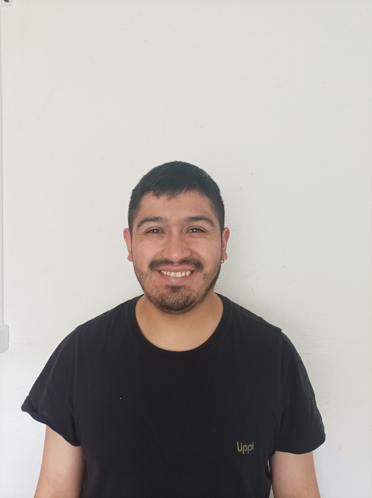

Curriculum Vitae

Hola!!! mi nombre es Diego Quilahuilque
Resumen
Motivado y proactivo con muchas ganas de aprender y de enseñar
apto para el trabajo en equipo y con fuertes habilidades organizativas e interpersonales.
Realice un voluntariado para poder encontrar un real valor a mis estudios y a mi vida
personal e interpersonal.
Datos Personales
- Nombre: Diego Antonio Quilahuilque Ruíz
- Lugar de Nacimiento: Ancud, Chiloé
- Fecha de Nacimiento: 08/10/1990
- Linkedin: Link de Linkedin
- Twitter: Twiiter
Formación
Analista Programador
INACAP Puerto Montts
2017 - 2018
Titulado de la carrera de Analista Programador.
Ingeniería en Informática
INACAP Puerto Montt
2012 - May 2015
Carrera cursada hasta el 7° semestre, tuve que congelar por temas personales.
Vi lenguajes de programación como:
Estudios Secundarios
Liceo El Pilar Ancud
Mar 2005 - Dic 2009
Educación pre-básica y básica
Colegio El Pilar Ancud
Mar 1995 - Dic 2004
Premios y Reconocimientos
Durante mi trayectoria academica, profesional y de vida he recibido algunos
premios debido a mi formación valórica, profesional y deportiva.
- Mejor compañero de curso (1996-1998-2004-2008)
- Goleador campeonato Araucana (1997)
- Mejor jugador regional Décima Región - Puerto Varas (2004)
Ir a portafolio